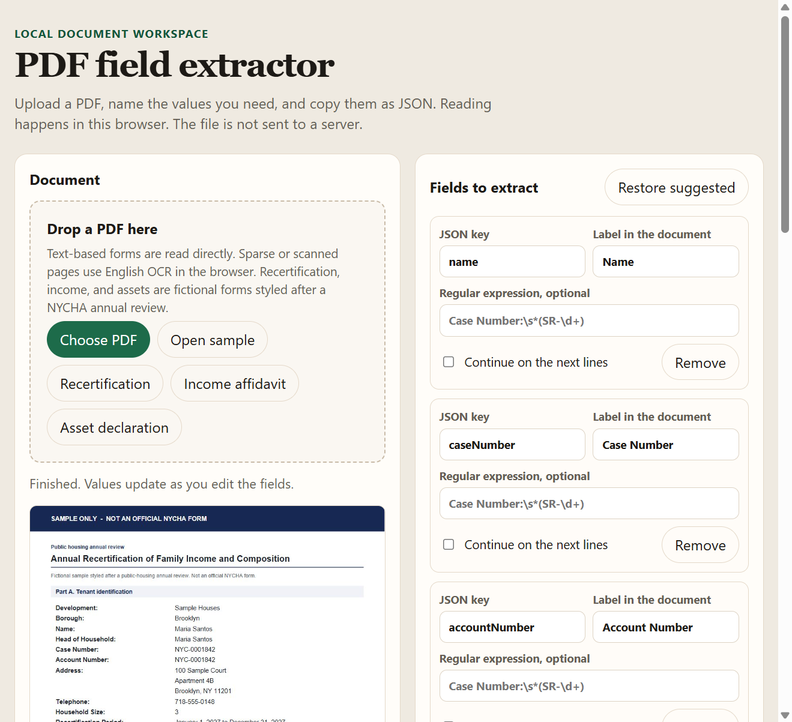

Inbound document
processing made easier
A browser-based replacement for PSIGEN. It reads the PDFs NYCHA receives and pulls out the facts staff need, such as name, account number, address, and income, with nothing to install and no license to buy.
Inbound documents depend on a licensed install
- Residents, applicants, and partners send forms and supporting proof, often as PDFs or scans.
- Today these documents are processed in PSIGEN, a licensed product that has to be installed on each computer.
- A license limits how many people and machines can use it. Adding capacity means buying more licenses.
What that costs
Every new workstation, upgrade, or replacement computer needs an install and a license.
Once the licenses are used up, a new staff member or office has to wait.
Staff who move between offices or work remotely are tied to specific machines.
Open a PDF, choose the fields, get clean data
Open the document
Drag a PDF into the browser. Typed forms are read directly. Scanned pages are read with text recognition (OCR).
Name the fields
List the labels to look for, such as "Case Number" or "Income". Staff set this up once per document type. No programming needed.
Review and copy
The values appear as structured data. The tool flags any field it could not find. Staff check and copy or download the result.
Same job, without the install or the license
| PSIGEN today | Browser tool | |
|---|---|---|
| License | A paid license, with a limit on users and machines | No license to buy or assign. |
| Getting started | Software installed on each computer | Open a web address. Nothing to install. |
| Where staff can work | Only on machines with PSIGEN set up | Any NYCHA computer with a modern browser |
| Updates | Applied to each installation | Published once. Everyone gets it the next time they open the page. |
| New document types | To confirm with the PSIGEN team | Staff add field labels on screen. No developer needed. |
| Where documents go | To confirm with the PSIGEN team | Read inside the browser. Not uploaded to a server. |
One tool for many inbound processes
Annual recertification
Recertification form, income affidavit, and asset declaration.
Applications
Applicant name, household size, contact details, and income from application forms.
Income and benefit proof
Pay stubs, benefit letters, and employer statements.
Household change requests
Requests to add or remove members, or to transfer apartments.
Vendor and contractor paperwork
Invoice numbers, amounts, dates, and vendor names.
Resident correspondence
Account number, address, and date from letters and notices sent in.
Candidates are examples to confirm with each business area. Each needs its own field setup and testing.
From form to structured data
Apartment 4B
Brooklyn, NY 11201
Actual output from the tool on a fictional sample form. The three-line address is joined into one value automatically. Any other document type works the same way once its fields are set up.
Document, fields, and result on one screen

- The page preview lets staff check each value against the original.
- Each document type has its own field setup, which staff can edit on screen.
- Missing values are listed by name, so nothing is silently skipped.
- Runs in a standard web browser. Nothing to install.
Several documents, one set of facts
| Document | Fields pulled out | Monthly income shown |
|---|---|---|
| Annual recertification | Name, case and account number, development, address, household size, income, date | $3,260.00 |
| Affidavit of income | Employer, gross wages ($2,840.00), SSI ($420.00), public assistance, total income | $3,260.00 |
| Declaration of assets | Bank name, account type, checking balance ($1,180.00), savings balance ($640.00) | Not applicable |
The tool does the copying. Staff still make every decision.
Document arrives
From a resident, applicant, or vendor, online, by mail, or in person, and saved as PDF.
Read the PDF
Text is read from each page. Scanned pages use OCR.
Pull the fields
Values are matched to that document type's setup. Missing ones are flagged.
Verify
Check each value against the page preview and correct as needed.
Record
Enter or paste the checked values into the system of record.
What NYCHA would gain
No install, no license
Runs in a web browser, so there is no PSIGEN install to manage and no license limit on who can use it.
Work from any desk
Staff are no longer tied to the machines where the software is set up.
Simpler updates
A change is published once and reaches every user. No per-computer upgrades.
One tool, many processes
A new document type needs a new field setup, not a new system. No developer needed.
Consistent data
Every office gets the same field names in the same format for the same document type.
Documents stay local
The PDF is read inside the browser and is not uploaded to a server.
Built so documents never leave the computer
How it works today
- The PDF is opened and read entirely inside the browser.
- No document or extracted value is sent to a server.
- Only the field setup is saved, in that browser.
Needed before real documents
- Host on NYCHA-approved infrastructure. The current public site is for demos only.
- Bundle the OCR language files locally. Today they download from the internet on first use.
- Complete an IT security and privacy review.
What the prototype does not do yet
- Tested only on fictional recertification samples, not real documents.
- Each new document type needs its field setup built and tested.
- Finds values by their labels. Unusual layouts may need a custom pattern.
- OCR is English only and is not reliable on handwriting.
- Does not connect to NYCHA systems. Staff still paste values in.
- No user accounts or audit trail.
- Does not make decisions, such as eligibility or rent.
- Not yet compared feature by feature with PSIGEN, for example scanning and exports.
Start with one process, then prove it carries over
Scope
One office and a few staff, starting with recertification, since its setups already exist.
Then add a second document type from another process to test reuse.
Staff run the same documents through PSIGEN and the new tool, side by side.
Approved hosting and real forms, after the security review.
What we measure
Minutes per document, compared with PSIGEN.
Share of fields extracted correctly, compared with PSIGEN.
How often staff had to correct a value.
How long a new document type takes to set up.
Staff feedback on ease of use.
What we need from leadership
- Approval to run the pilot.
- A partner office willing to try it on recertification and one more document type.
- PSIGEN users and owners to list the features staff rely on today, and the documents that cost the most time.
- An IT and security contact to review hosting and privacy.
- A few de-identified real documents of each type so field setups match what NYCHA actually receives.
Try the public demo with sample forms
divyarpanicker26.github.io/pdf-scanner